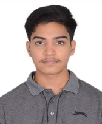

Sri Karthikeya Bhagavatula
B.Tech in Computer Science and Engineering - 1st Year
+91 7400261995 | Email | LinkedIn
Objective
A motivated first-year B.Tech student with a foundation in programming languages and web development, eager to apply and expand technical skills in real-world projects. Interested in gaining practical experience in software development and contributing to innovative projects.
Education
- SRM Institute of Science & Technology
B.Tech in Computer Science and Engineering
Graduation Year: 2028
Year: Ist
CGPA: TBD
- PACE Junior Science College
Standard: XIIth
Grade: A
- Pawar Public School, Dombivali
Standard: Xth
Percentage: 90.00%
Skills
- Programming Languages: Java (Intermidiate), C/C++ (Intermidiate), Python (Intermidiate)
- Web Development: HTML, CSS, JavaScript (Beginner)
- Database: SQL (Beginner)
- Soft Skills: Problem-Solving, Teamwork, Communication, Negotiations
Projects
Certifications
Extracurricular Activities
- Member of [Club Soon to be joining]
- Participated in TCS CodeVita Season 12
Hobbies & Interests
- Automobile Enthusiast
- Swimming
- Reading good books
- Exploring new programming languages